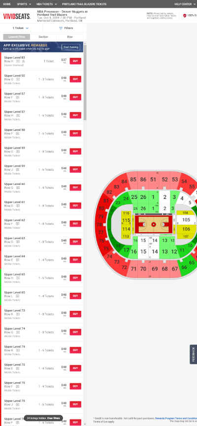
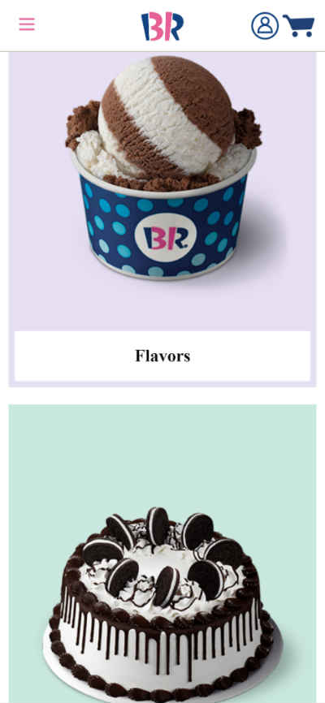

Alignment
Expedia
expedia.comI think this site does a really good job aligning the different fields in the browser. You can immediately tell that each of the items are positioned well and also in a way that’s easy to read. There is clear order and nothing on the page seems to be irrelevant to the other items.
Repetition
Vivid Seats
vividseats.com
I think this site does an excellent job demonstrating the use of repetition. It clearly has different color schemes for sections of different value and stadium levels. It also uses repetition well by listing the tickets from the top to the bottom of the page. I can easily tell which tickets are going to be in my student budget and which section I’ll probably never want to spend money on.
Contrast
Baskin Robbins
baskinrobbins.com
I think Baskins Robbins does a great job using contrast on their wesbite. One of the main ways they use contrast is by using pink text on top of a white backgound. It makes it really stand out. Another way they use contrast that I like is how they implement the “31” into the “BR” logo. It's a fun visual effect.